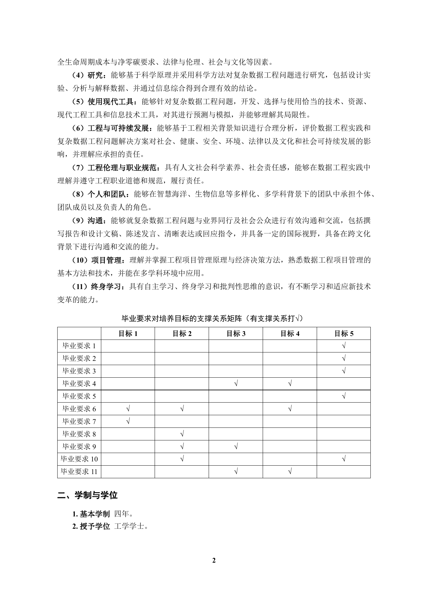

图 A：培养方案第 2 页“毕业要求支撑矩阵”本地解析对比
同一原始页面下，对比原始 PDF 局部、pdftotext -layout、MinerU pipeline 与 MinerU2.5 的真实输出差异。
原始 PDF 页面局部
培养方案第 2 页，矩阵位于页面中下部。

pdftotext -layout
真实抽取结果，仅做基础排版，不修正文中问题。
毕业要求对培养目标的支撑关系矩阵（有支撑关系打√）
目标 1 目标 2 目标 3 目标 4 目标 5
毕业要求 1 √
毕业要求 2 √
毕业要求 3 √
毕业要求 4 √ √
毕业要求 5 √
毕业要求 6 √ √ √
毕业要求 7 √
毕业要求 8 √
毕业要求 9 √ √
毕业要求 10 √ √
毕业要求 11 √ √
MinerU pipeline
直接取自 pipeline 结构化输出中的矩阵表格。
毕业要求对培养目标的支撑关系矩阵
| 目标1 | 目标2 | 目标3 | 目标4 | 目标5 | |
| 毕业要求1 | $\surd$ | ||||
| 毕业要求2 | $\surd$ | ||||
| 毕业要求3 | 专 | ||||
| 毕业要求4 | √ | √ | |||
| 毕业要求5 | √ | ||||
| 毕业要求6 | √ | √ | ~ | ||
| 毕业要求7 | √ | ||||
| 毕业要求8 | √ | ||||
| 毕业要求9 | 专 | √ | |||
| 毕业要求10 | $\surd$ | $\surd$ | |||
| 毕业要求11 | √ | $\surd$ |
MinerU2.5
直接取自 MinerU2.5 VLM 输出中的矩阵表格。
毕业要求对培养目标的支撑关系矩阵
| 目标1 | 目标2 | 目标3 | 目标4 | 目标5 | |
| 毕业要求1 | ✓ | ||||
| 毕业要求2 | ✓ | ||||
| 毕业要求3 | ✓ | ||||
| 毕业要求4 | ✓ | ✓ | |||
| 毕业要求5 | ✓ | ||||
| 毕业要求6 | ✓ | ✓ | ✓ | ||
| 毕业要求7 | ✓ | ||||
| 毕业要求8 | ✓ | ||||
| 毕业要求9 | ✓ | ✓ | |||
| 毕业要求10 | ✓ | ✓ | |||
| 毕业要求11 | ✓ | ✓ |